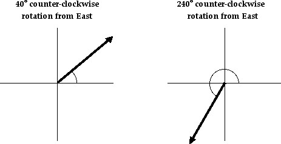
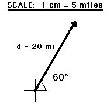

Vectors and Directions
A variety of quantities that we may study in the physical world include distance, displacement, speed, velocity, acceleration, force, mass, momentum, energy, work, power, etc. All these quantities can be divided into two categories - vectors and scalars. A vector quantity is a quantity that is fully described by both magnitude and direction. On the other hand, a scalar quantity is a quantity that is fully described by its magnitude. The emphasis of this unit is to understand some fundamentals about vectors and understand some situations in which they may be applied.

Examples of vector quantities that you may have previously heard of include displacement, velocity,acceleration, and force. Each of these quantities are unique in that a full description of the quantity demands that both a magnitude and a direction are listed. For example, suppose your teacher tells you "A bag of gold is located outside the classroom. To find it, displace yourself 20 meters." This statement may interest you; yet, there is not enough information included in the statement to find the bag of gold. The displacement required to find the bag of gold has not been fully described. On the other hand, suppose your teacher tells you "A bag of gold is located outside the classroom. To find it, displace yourself from the center of the classroom door 20 meters in a direction 30 degrees to the west of north." This statement now provides a complete description of the displacement vector - it lists both magnitude (20 meters) and direction (30 degrees to the west of north) relative to a reference or starting position (the center of the classroom door). Vector quantities are not fully described unless both magnitude and direction are listed.

Representing Vectors
Vector quantities are often represented by scaled vector diagrams. Vector diagrams depict a vector by use of an arrow drawn to scale in a specific direction. You have seen vector diagrams previously in the lesson about free-body diagrams-- feel free to review that module before going on. An example of a scaled vector diagram is shown in the diagram above. The vector diagram depicts a displacement vector. Observe that there are several characteristics of this diagram that make it an appropriately drawn vector diagram.
- a scale is clearly listed
- a vector arrow (with arrowhead) is drawn in a specified direction. The vector arrow has a head and a tail.
- the magnitude and direction of the vector is clearly labeled. In this case, the diagram shows the magnitude is 20 m and the direction is (30 degrees West of North).
Conventions for Describing Directions of Vectors
Vectors can be directed due East, due West, due South, and due North. But some vectors are directed northeast (at a 45 degree angle); and some vectors are even directed northeast, yet more north than east. Thus, there is a clear need for some form of a convention for identifying the direction of a vector that is not due East, due West, due South, or due North. There are a variety of conventions for describing the direction of any vector. The two conventions that will be discussed and used in this unit are described below:
- The direction of a vector is often expressed as an angle of rotation of the vector about its "tail" from east, west, north, or south. For example, a vector can be said to have a direction of 40 degrees North of West (meaning a vector pointing West has been rotated 40 degrees towards the northerly direction) of 65 degrees East of South (meaning a vector pointing South has been rotated 65 degrees towards the easterly direction).
- The direction of a vector is often expressed as a counterclockwise angle of rotation of the vector about its "tail" from due East. Using this convention, a vector with a direction of 30 degrees is a vector that has been rotated 30 degrees in a counterclockwise direction relative to due east. A vector with a direction of 160 degrees is a vector that has been rotated 160 degrees in a counterclockwise direction relative to due east. A vector with a direction of 270 degrees is a vector that has been rotated 270 degrees in a counterclockwise direction relative to due east. This is one of the most common conventions for the direction of a vector and will be utilized throughout this unit.
Two illustrations of the second convention (discussed above) for identifying the direction of a vector are shown below.
Representing the Magnitude of a Vector
The magnitude of a vector in a scaled vector diagram is depicted by the length of the arrow. The arrow is drawn a precise length in accordance with a chosen scale. For example, the diagram at the right shows a vector with a magnitude of 20 miles. Since the scale used for constructing the diagram is 1 cm = 5 miles, the vector arrow is drawn with a length of 4 cm. That is, 4 cm x (5 miles/1 cm) = 20 miles.
